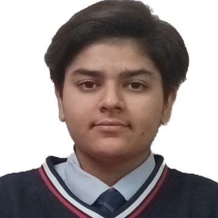

AI Intern @ UniGPS Solutions · Bengaluru, India
I'm 18, and I'm spending this year learning to build with AI — properly, by building things and putting them where people can see them.
A course isn't finished when the video ends. It's finished when something public exists — a repo, a live URL, a written teardown, a recorded explainer. Certificates prove attendance. Artifacts prove skill.
UniGPS Solutions · Bengaluru
I run my own learning plan: pick a module, work it, and finish it by shipping something public. This table is the honest state of it — including the parts that aren't done.
Foundations for building with Claude
Applied AI tooling
Full course worked through 11 Aug 2026 — shipping one real marketing asset built with Claude Code
Ends in a recorded three-minute unscripted explainer of a technical topic
Sri Kumaran Children's Home, Bengaluru · 90.6% (best of five) · PCM 88.3%